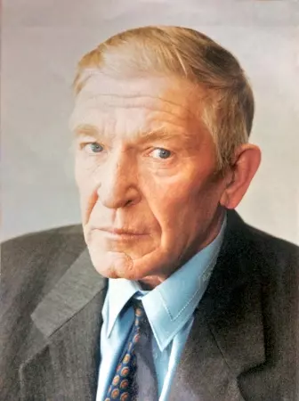

Караван стихов

Краткая биографическая справка
Родился в 1940 году в городе Мары. С началом ВОВ был эвакуирован с матерью на родину отца в село Петровское, Саракташского района, Оренбургской области. В 1959 году призван на воинскую службу, на северный флот. В гражданской жизни почти постоянно проживал в Оренбуржье. В Караванном проживал с 1979 года. Принимал непосредственное участие в строительстве посёлка, в качестве начальника механизированного отряда УМ "Оренбургсельстрой" при ПМК-160. По окончанию строительства перешёл работать в совхоз.